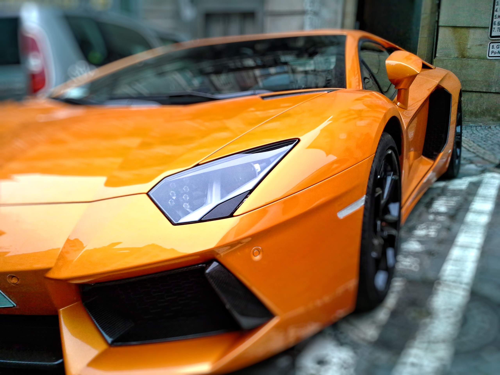

SAMOCHODY SPORTOWE
Samochód sportowy – klasa samochodów, w których zastosowano rozwiązania techniczne umożliwiające osiągi bliższe samochodom wyścigowym, aniżeli osobowym, pozostawiając jednak możliwość eksploatowania ich w warunkach drogowych. Analogicznie do np. minivanów i crossoverów, samochody sportowe dzielą się na segmenty - najliczniej reprezentowana jest klasa kompaktowa, klasa średnia i klasa średnia-wyższa.
Samochody sportowe są zróżnicowane pod względem wyposażenia i osiągów. Występują wśród nich usportowione wersje samochodów różnych segmentów i pojazdy budowane od podstaw jako sportowe. Są one produkowane zarówno przez wyspecjalizowane firmy (Jaguar, Lotus, Aston Martin, BMW, Ferrari, Lamborghini, Subaru, Porsche i inne) jak i stanowią uzupełnienie ofert producentów masowych. Niektóre marki, które rozpoczynały jako producenci aut sportowych, a następnie zaczęły produkować auta innych segmentów, utrzymują produkcję aut sportowych dla prestiżu i tradycji marki (Mercedes, Alfa Romeo i inne).
Samochody sportowe są zróżnicowane pod względem wyposażenia i osiągów. Występują wśród nich usportowione wersje samochodów różnych segmentów i pojazdy budowane od podstaw jako sportowe. Są one produkowane zarówno przez wyspecjalizowane firmy (Jaguar, Lotus, Aston Martin, BMW, Ferrari, Lamborghini, Subaru, Porsche i inne) jak i stanowią uzupełnienie ofert producentów masowych. Niektóre marki, które rozpoczynały jako producenci aut sportowych, a następnie zaczęły produkować auta innych segmentów, utrzymują produkcję aut sportowych dla prestiżu i tradycji marki (Mercedes, Alfa Romeo i inne).
GALERIA:

